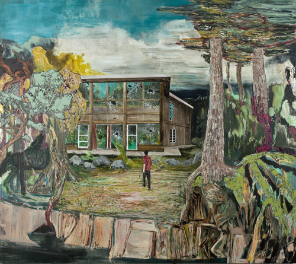
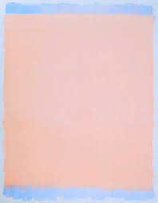
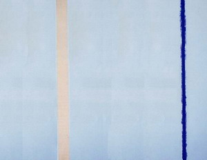

아그네스 d 마틴
마이애미 출신으로 젊은 나이에 세계 미술계의 신성으로 주목받은 작가 헤르난 바스(Hernan Bas)의 아시아 첫 개인전 <불신의 순간적 유예(A brief suspension of disbelief)>(6. 19~7. 20)가 PKM트리니티갤러리에서 열렸다. 그는 과거의 미술과 문학, 영화 등에서 인용한 풍부한 이야기를 특유의 장식적이고 낭만적인 이미지로 재탄생시킨다. 그의 작품에 등장하는 마르고 여린 소년들과 무슨 일이라도 일어날 것만 같은 긴장감 넘치는 배경은 인간 내면의 불안과 두려움을 극적으로 담아낸다. art in culture 7월호에는 헤르난 바스의 짧은 인터뷰 기사가 실린 바 있다. artWA에서 미처 다 소개 못 한 비하인드 풀스토리를 전격 공개한다.
1




title the visitor sees.
2
 3
4